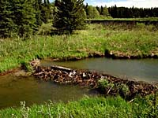

Base Layer
First Floor
Second Floor
Third Floor
Canopy Layer
The region where a plant or animal naturally lives and grows is called its habitat. A habitat consists of the food, water, shelter, and space required by a particular plant or animal. An organisms habitat may change due to natural influences or those that are man-made. Habitat modification or the transport of organisms form one habitat to another may result in detrimental effects for the natural organisms living in that area. Many wildlife habitat projects are in existence in Saskatchewan to help save organisms form the effects that humans have caused in the forests. |
 All living things have specific and individual habitat needs. For example, beaver require an abundant supply of trees, preferably poplar and birch, near a water supply. Plants need differing amounts and types of light, soil, water, and shelter and a certain amount of space in which to grow. For example, tamarack is often found in cold, wet and poorly drained places. Pines are more commonly found in soils that are sandy or gravelly. We must be careful not to alter the natural habitats that exist in the environment or risk changing the types of organisms that occupy those areas. |
Layers of Life in the Forest
Imagine the forest community as an apartment building, composed of many storeys or living layers stacked one on the other. Each layer is characterized by the types of plants and animals that live there. In addition, each forest layer is characterized by its temperature, humidity, and the quality and quantity of light necessary for the survival of the organisms living there. |
Soils forms the base of the apartment building and, where forests grow, are generally of lower quality than agricultural soils. There is less organic matter in forest soils than in prairie soils. Grasses die and decay at a much greater rate than trees. Most of the organic matter in soils where forests grow, comes from fallen leaves that decay in a thin layer on the surface. Organisms such as insects and worms mix this material into a shallow, top layer of soil. This base determines the type of vegetation it can support. |
When trees are harvested, the logging equipment often destroys the vegetative cover and, if not properly done, may compact the soil. (Harvesting in the winter when the soil is frozen prevents soil compaction.) Soil erosion from water and wind may result following harvesting. When seedlings are chosen for a reforestation project, soil type and good planting conditions are prime considerations. |
First Floor - Understory Plants of the Forest Floor
Understory vegetation reflects many of the characteristics of forest stands. The species composition and abundance of understory plants are good indicators of the type of forest site and its influence on tree growth.
|
On the first floor of the apartment, or the forest floor, are forbs, small herbaceous plants, mosses and lichens. Mosses cover the ground and sometimes grow up the trunks of old trees. Lichens take longer than most plants to establish and so are most abundant in older forests. They may be found on the ground or hanging from trees. Chipmunks, insects, spiders, earthworms, and mushrooms live and grow amid the decaying logs and leaf litter. |
Second Floor - Understory Plants of Herb and Shrub
Layer
The second story is the herb and shrub layer. Herbaceous plants, tree seedlings, large ferns, and a variety of shrubs grow in the shade of trees, providing food and shelter for many wildlife species such as colourful butterflies, dragonflies, mice, weasels, deer, porcupine, and skunk. |
Examples of plants included in this layer are:
|
Third Floor - Understory Tall Shrub
Tall shrubs (all woody plants over 1 meter in height) are found in this area. The tops of trees, some 10 meters to 15 meters in height, are home to a variety of birds and insects. |
In the penthouse of the forest, the forest canopy, is formed by the arching upper branches of trees up to 30 m high, you might see a hawk or hear the hoot of an owl. |